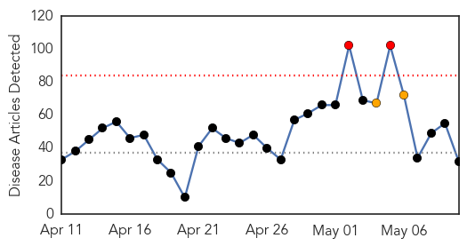
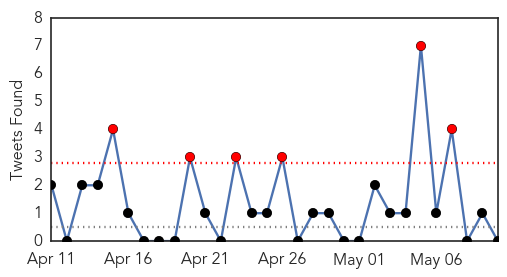
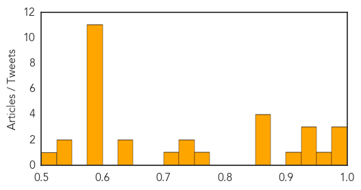

Unknown
30-Day Web Trend
2 alerts, 2 warnings

30-Day Twitter Trend
6 alerts, 0 warnings

Article Locations


Article Confidences
Top Articles:
- 0.999
- First US MERS Patient Now in Good Health, Leaves Hospital
- 0.998
- First U.S. MERS patient discharged from hospital
- 0.997
- Nation's first MERS patient leaves hospital
- 0.954
- Dr. Kate Scannell: In a week to honor nurses, some health news should not be overlooked
- 0.939
- Gulf Daily News Local News US patient released from hospital
- 0.935
- as American as apple pie?
- 0.932
- No MERS cases in Jahra Hospital - Kuwait Times
- 0.917
- Chicago Tribune
- 0.866
- Demonstrators are dressed as polar bears and a pirate take part in a protest for Germany's shift to green energy and away from nuclear power and fossil fuels in Berlin
- 0.866
- Demonstrators use boats on the river Spree during a protest for Germany's shift to green energy and away from nuclear power and fossil fuels in Berlin
- 0.866
- Fifty-nine people arrested in S.Africa post-election protests -police
- 0.866
- Ukrainian forces retake city hall in eastern port of Mariupol
- 0.759
- Travelers to Middle East cautioned over deadly respiratory disease
- 0.736
- Kansas State vet warns horse owners of equine herpes virus
- 0.730
- Infections inside hospitals attacking patients
- 0.720
- Understanding health care and hospital system in Kathmandu
- 0.634
- Enfield school issues scabies warning
- 0.625
- No water in Pindi areas for four days
- 0.590
- WHO: Mental health problems emerging in Yolanda-hit areas
- 0.579
- US officers killed Yemeni civilians, State Department says
- 0.579
- Separatists in eastern Ukraine prepare to vote in referendum
- 0.579
- Red Cross staff detained by separatists in east Ukraine
- 0.579
- Red Cross staff detained by separatists in east Ukraine
- 0.579
- Michelle Obama 'outraged' over Nigeria kidnappings
- 0.579
- Indian politicans woo their women as final vote looms
- 0.579
- Hollande, Merkel warn of ‘consequences’ ahead of Ukraine vote
- 0.579
- Burma’s diplomatic debut tested by spats over South China Sea
- 0.578
- Two French citizens among militants arrested in Yemen
- 0.578
- Thai demonstrators take to streets to protest PM’s ouster
- 0.538
- Brazil confirms second case of atypical mad cow disease
- 0.533
- Preventative measures
- 0.524
- Emergency Plan of Action (EPoA): Afghanistan: Floods and Landslides DREF Operation n° MDRAF002 - Afghanistan
Top Tweets:
-
No tweets found for May 10, 2014